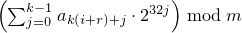

26 Numerics library [numerics]
26.5 Random number generation [rand]
26.5.3 Random number engine class templates [rand.eng]
Each type instantiated from a class template specified in this section [rand.eng] satisfies the requirements of a random number engine ([rand.req.eng]) type.
Except where specified otherwise, the complexity of each function specified in this section [rand.eng] is constant.
Except where specified otherwise, no function described in this section [rand.eng] throws an exception.
Descriptions are provided in this section [rand.eng] only for engine operations that are not described in [rand.req.eng] or for operations where there is additional semantic information. In particular, declarations for copy constructors, for copy assignment operators, for streaming operators, and for equality and inequality operators are not shown in the synopses.
Each template specified in this section [rand.eng] requires one or more relationships, involving the value(s) of its non-type template parameter(s), to hold. A program instantiating any of these templates is ill-formed if any such required relationship fails to hold.
For every random number engine and for every random number engine adaptor X defined in this sub-clause ([rand.eng]) and in sub-clause [rand.adapt]:
if the constructor
template <class Sseq> explicit X(Sseq& q);
is called with a type Sseq that does not qualify as a seed sequence, then this constructor shall not participate in overload resolution;
if the member function
template <class Sseq> void seed(Sseq& q);
is called with a type Sseq that does not qualify as a seed sequence, then this function shall not participate in overload resolution.
The extent to which an implementation determines that a type cannot be a seed sequence is unspecified, except that as a minimum a type shall not qualify as a seed sequence if it is implicitly convertible to X::result_type.
26.5.3.1 Class template linear_congruential_engine [rand.eng.lcong]
A linear_congruential_engine random number engine produces unsigned integer random numbers. The state xi of a linear_congruential_engine object x is of size 1 and consists of a single integer. The transition algorithm is a modular linear function of the form TA(xi) = (a · xi + c) mod m; the generation algorithm is GA(xi) = xi+1 .
template<class UIntType, UIntType a, UIntType c, UIntType m>
class linear_congruential_engine{
public:
// types
typedef UIntType result_type;
// engine characteristics
static constexpr result_type multiplier = a;
static constexpr result_type increment = c;
static constexpr result_type modulus = m;
static constexpr result_type min() { return c == 0u ? 1u: 0u };
static constexpr result_type max() { return m - 1u };
static constexpr result_type default_seed = 1u;
// constructors and seeding functions
explicit linear_congruential_engine(result_type s = default_seed);
template<class Sseq> explicit linear_congruential_engine(Sseq& q);
void seed(result_type s = default_seed);
template<class Sseq> void seed(Sseq& q);
// generating functions
result_type operator()();
void discard(unsigned long long z);
};
If the template parameter m is 0, the modulus m used throughout this section [rand.eng.lcong] is numeric_limits<result_type>::max() plus 1. [ Note: m need not be representable as a value of type result_type. — end note ]
If the template parameter m is not 0, the following relations shall hold: a < m and c < m.
The textual representation consists of the value of xi.
explicit linear_congruential_engine(result_type s = default_seed);
Effects: Constructs a linear_congruential_engine object. If c mod m is 0 and s mod m is 0, sets the engine's state to 1, otherwise sets the engine's state to s mod m.
template<class Sseq> explicit linear_congruential_engine(Sseq& q);
Effects: Constructs a linear_congruential_engine object.
With
 and a an array (or equivalent)
of length k + 3,
invokes q.generate(a+0, a+k+3)
and then computes
and a an array (or equivalent)
of length k + 3,
invokes q.generate(a+0, a+k+3)
and then computes
 .
If
c mod m is 0
and
S is 0,
sets the engine's state to 1,
else sets the engine's state
to S.
.
If
c mod m is 0
and
S is 0,
sets the engine's state to 1,
else sets the engine's state
to S.
26.5.3.2 Class template mersenne_twister_engine [rand.eng.mers]
A mersenne_twister_engine random number engine276 produces unsigned integer random numbers in the closed interval [0,2w-1]. The state xi of a mersenne_twister_engine object x is of size n and consists of a sequence X of n values of the type delivered by x; all subscripts applied to X are to be taken modulo n.
The transition algorithm employs a twisted generalized feedback shift register defined by shift values n and m, a twist value r, and a conditional xor-mask a. To improve the uniformity of the result, the bits of the raw shift register are additionally tempered (i.e., scrambled) according to a bit-scrambling matrix defined by values u, d, s, b, t, c, and ℓ.
The state transition is performed as follows:
Concatenate the upper w-r bits of Xi-n with the lower r bits of Xi+1-n to obtain an unsigned integer value Y.
With α = a · (Y bitand 1), set Xi to Xi+m-n xor (Y rshift 1) xor α.
The sequence X is initialized with the help of an initialization multiplier f.
The generation algorithm determines the unsigned integer values z1, z2, z3, z4 as follows, then delivers z4 as its result:
Let z1 = Xi xor (( Xi rshift u ) bitand d).
Let z2 = z1 xor ( (z1 lshiftw s) bitand b ).
Let z3 = z2 xor ( (z2 lshiftw t) bitand c ).
Let z4 = z3 xor ( z3 rshift ℓ ).
template<class UIntType, size_t w, size_t n, size_t m, size_t r,
UIntType a, size_t u, UIntType d, size_t s,
UIntType b, size_t t,
UIntType c, size_t l, UIntType f>
class mersenne_twister_engine{
public:
// types
typedef UIntType result_type;
// engine characteristics
static constexpr size_t word_size = w;
static constexpr size_t state_size = n;
static constexpr size_t shift_size = m;
static constexpr size_t mask_bits = r;
static constexpr UIntType xor_mask = a;
static constexpr size_t tempering_u = u;
static constexpr UIntType tempering_d = d;
static constexpr size_t tempering_s = s;
static constexpr UIntType tempering_b = b;
static constexpr size_t tempering_t = t;
static constexpr UIntType tempering_c = c;
static constexpr size_t tempering_l = l;
static constexpr UIntType initialization_multiplier = f;
static constexpr result_type min () { return 0; }
static constexpr result_type max() { return 2w - 1; }
static constexpr result_type default_seed = 5489u;
// constructors and seeding functions
explicit mersenne_twister_engine(result_type value = default_seed);
template<class Sseq> explicit mersenne_twister_engine(Sseq& q);
void seed(result_type value = default_seed);
template<class Sseq> void seed(Sseq& q);
// generating functions
result_type operator()();
void discard(unsigned long long z);
};
The following relations shall hold: 0 < m, m <= n, 2u < w, r <= w, u <= w, s <= w, t <= w, l <= w, w <= numeric_limits<UIntType>::digits, a <= (1u<<w) - 1u, b <= (1u<<w) - 1u, c <= (1u<<w) - 1u, d <= (1u<<w) - 1u, and f <= (1u<<w) - 1u.
The textual representation of xi consists of the values of Xi-n, …, Xi-1, in that order.
explicit mersenne_twister_engine(result_type value = default_seed);
Effects: Constructs a mersenne_twister_engine object. Sets X-n to value mod 2w. Then, iteratively for i = 1-n,…,-1, sets Xi to [f · (Xi-1 xor (Xi-1 rshift (w-2)) ) + i mod n ] mod 2w .
Complexity: Ο(n).
template<class Sseq> explicit mersenne_twister_engine(Sseq& q);
Effects: Constructs a mersenne_twister_engine object.
With
k = ⌈ w / 32 ⌉
and a an array (or equivalent)
of length n · k ,
invokes q.generate(a+0, a+n · k)
and then, iteratively for i = -n,…,-1,
sets Xi
to  .
Finally,
if the most significant w-r bits of X-n
are zero,
and if each of the other resulting Xi is 0,
changes X-n
to 2w-1 .
.
Finally,
if the most significant w-r bits of X-n
are zero,
and if each of the other resulting Xi is 0,
changes X-n
to 2w-1 .
The name of this engine refers, in part, to a property of its period: For properly-selected values of the parameters, the period is closely related to a large Mersenne prime number.
26.5.3.3 Class template subtract_with_carry_engine [rand.eng.sub]
A subtract_with_carry_engine random number engine produces unsigned integer random numbers.
The state xi of a subtract_with_carry_engine object x is of size Ο(r), and consists of a sequence X of r integer values 0 ≤ Xi < m = 2w; all subscripts applied to X are to be taken modulo r. The state xi additionally consists of an integer c (known as the carry) whose value is either 0 or 1.
The state transition is performed as follows:
Let Y = Xi-s - Xi-r - c .
Set Xi to y = Y mod m . Set c to 1 if Y < 0, otherwise set c to 0.
[ Note: This algorithm corresponds to a modular linear function of the form TA(xi) = (a · xi) mod b , where b is of the form mr - ms + 1 and a = b - (b-1) / m . — end note ]
The generation algorithm is given by GA(xi) = y , where y is the value produced as a result of advancing the engine's state as described above.
template<class UIntType, size_t w, size_t s, size_t r>
class subtract_with_carry_engine{
public:
// types
typedef UIntType result_type;
// engine characteristics
static constexpr size_t word_size = w;
static constexpr size_t short_lag = s;
static constexpr size_t long_lag = r;
static constexpr result_type min() { return 0; }
static constexpr result_type max() { return m - 1; }
static constexpr result_type default_seed = 19780503u;
// constructors and seeding functions
explicit subtract_with_carry_engine(result_type value = default_seed);
template<class Sseq> explicit subtract_with_carry_engine(Sseq& q);
void seed(result_type value = default_seed);
template<class Sseq> void seed(Sseq& q);
// generating functions
result_type operator()();
void discard(unsigned long long z);
};
The following relations shall hold: 0u < s, s < r, 0 < w, and w <= numeric_limits<UIntType>::digits.
The textual representation consists of the values of Xi-r, …, Xi-1, in that order, followed by c.
explicit subtract_with_carry_engine(result_type value = default_seed);
Effects: Constructs a subtract_with_carry_engine object. Sets the values of X-r, …, X-1 , in that order, as specified below. If X-1 is then 0, sets c to 1; otherwise sets c to 0.
To set the values Xk, first construct e, a linear_congruential_engine object, as if by the following definition:
linear_congruential_engine<result_type,
40014u,0u,2147483563u> e(value == 0u ? default_seed : value);
Then, to set each Xk,
obtain new values z0, …, zn-1
from n = ⌈ w/32 ⌉ successive invocations
of e taken modulo 232.
Set Xk to  .
.
Complexity: Exactly n · r invocations of e.
template<class Sseq> explicit subtract_with_carry_engine(Sseq& q);
Effects: Constructs a subtract_with_carry_engine object. With k = ⌈ w / 32 ⌉ and a an array (or equivalent) of length r · k , invokes q.generate(a+0, a+r · k) and then, iteratively for i = -r, …, -1, sets Xi to . If X-1 is then 0, sets c to 1; otherwise sets c to 0.